第一篇 · 第 3 章
建立 HotSpot 源码阅读与观察环境
怎样获得与运行现象相匹配的源码和诊断证据？先固定输入，再明确每种工具实际看到了哪一层。
本章沿第 1 章程序，建立 Java 虚拟机（Java Virtual Machine，JVM）的环境记录、工具使用和源码阅读方法。Java 开发工具包（Java Development Kit，JDK）版本、源码提交、发行版适配、运行参数与观察权限都是证据条件，不能用“我电脑上能运行”代替它们。
找到了函数名，为什么还不能说本次经过它
源码中存在某个对象分配函数，可能说明它负责一种分配路径，却不证明普通运行中的每次对象创建都调用它。编译、生成代码、内建函数和快慢路径可能改变入口。反过来，调试器显示一串没有普通函数名的地址，也不能直接说明程序已经损坏。
本轮先复用 CH01 的源码和 CH02 的目标进程工具能力，再用受控解释配置运行一次，并在本地调试器中分别命中虚拟机创建、类文件解析与解释器分配入口。源文件没有改成专用测试桩；参数和调试停顿单独记入运行条件。
3.1 OpenJDK 源码组织
3.1.1 模块、共享实现与平台实现
src/java.base/share/classes 主要是基础模块的 Java 实现；share/native 包含本地库与启动器；src/hotspot/share 放置跨平台的类加载、运行时、解释器协作、元数据等实现。操作系统、处理器以及两者组合的实现分别进入 os、cpu、os_cpu 等目录。[S03]

一个功能可能跨越这些目录：Thread.start 是 Java 层入口，平台线程创建要经过共享运行时，再进入具体系统代码。目录结构说明归属，不自动给出全部调用关系；进入目录后仍要找符号、参数、状态条件与协作者。
3.1.2 从具体问题按层推进
从 Java 方法开始时，先看其契约和实际实现：它是普通 Java 方法、本地声明，还是有特殊运行时处理？本地声明可沿注册表或入口函数关联到实现。Java 本地接口（Java Native Interface，JNI）是重要边界，但也不能把全部运行时协作简化成 JNI 调用。
从字节码出发则先看指令语义，再选择解释器模板、编译器或运行时辅助入口。对平台相关行为，最后读所选系统与处理器的分支。每次只展开当前问题所需路径，并保存版本、符号和条件；全文搜索一个常见词得到数千条结果，通常不如沿一个已知调用的类型和分支前进。
3.2 版本选择与构建配置
3.2.1 源码与二进制的关系要能复查
本书的主环境记录了发行版 Homebrew、完整版本 25.0.5.0.2、实际工具目录、系统与架构；源码锁定 openjdk/jdk25u 标签 jdk-25.0.5.0.2-ga，提交 1775ea114f649f0314e4e43eb6c802ff16dfab7c。安装配方引用同一标签归档，仍有构建适配和厂商参数，不能把“标签相同”扩大为已经从源码重现整个发行版二进制。
无版本控制的书稿输入使用文件摘要固定，外部源码仍保留自己的提交。环境变更后只复查受影响结论，不把新版本的结果追溯当成旧运行条件。编译器、运行时和诊断工具也应分别核对，避免路径选择让 java、javac 与 jcmd 来自不同版本。[S01]
3.2.2 release、fastdebug 与 slowdebug
| 类型 | 典型配置性质 | 观察边界 |
|---|---|---|
| release | 面向正常运行，优化开启，HotSpot 内部断言通常关闭 | 本轮实际二进制；不代表所有函数名都完全不可见 |
| fastdebug | 保留优化，并开启调试信息与内部断言 | 用于开发诊断；开销和时机不能当作 release 性能结果 |
| slowdebug | 关闭相应优化，保留调试信息和内部断言 | 更便于源码级观察；执行成本与形态更不同 |
这些性质在本轮 make/autoconf/jdk-options.m4 和构建文档中核对。本轮没有构建另外两种二进制。原生调试符号的保存方式还有单独配置，不能只凭 debug-level 猜每个发行包都附带同样的符号文件。[S03]
为教学 Java 类文件开启 javac -g，并不把承载它的 HotSpot 变为 fastdebug。前者保存源码行号和局部变量等类文件信息，后者改变虚拟机自身的构建条件。本次 release 环境能按函数名断点，但没有因此声称具备全部原生源代码行与局部变量调试能力。
3.3 参数分类与生效条件
3.3.1 参数类别与选项拼写是两件事
-X、-XX 是启动选项的拼写形式，不足以直接说明其稳定性和可用性。HotSpot 标记产品、诊断、实验、开发构建等参数种类；可写性、来源和平台条件又是其他维度。诊断和实验参数通常有明确的解锁要求，开发构建参数则不能靠解锁开关自动变为当前产品构建可用。
锁定源码的 JVMFlag::is_unlocked、错误处理分支以及参数 kind 定义体现这些区分。本轮只读取支持的参数表，没有故意向产品构建传入开发参数来制造报错，也没有因解锁而使用诊断压力开关。[S04]
3.3.2 默认、自动选择与显式设置
// 本轮实际 PrintFlagsFinal 摘录，来自独立的 -version 进程
UseTLAB = true {product} {default}
MaxHeapSize = 4294967296 {product} {ergonomic}
UnlockDiagnosticVMOptions = true {diagnostic} {command line}
UnlockExperimentalVMOptions = true {experimental} {command line}前两项来自普通参数表，后两项来自显式解锁后的参数表，不能把它们当成一份没有变动的同进程快照。default 表示相应默认来源，ergonomic 表示运行时按条件选值，command line 表示最近由命令行设置；来源与“曾经在命令行指定过”也不是永远完全相同的概念。
这里自动选择的最大堆 4,294,967,296 字节，不是 CH02 显式 -Xmx128m 进程的有效上限。比较结果时必须带上命令、进程、环境和采样时点。参数默认值会随平台、资源与版本改变；记录本次值比写“默认通常是多少”更可复查。
3.4 基础工具与统一日志
3.4.1 文件工具与目标进程工具分开使用

javap 把编译产物的成员、指令、属性与索引展示出来。本章复用 CH01 保存的实际反汇编；它能对应创建 Payload 的字节码，却不能单独证明本次执行经过所有异常分支。
jcmd 则需要活进程。本轮复用 CH02-O02 的 jcmd 15216 help，实际目标列出 Thread.print、GC.heap_info、VM.flags、VM.native_memory、VM.info 等命令。先向目标读取 help，再按该进程的命令语法操作；旧文档或别的发行版支持某个命令，并不证明当前目标支持。相同用户身份也不代表任意受限执行环境都能建立附加通道，CH02-O01 已保留失败条件。[S02]
3.4.2 日志是选择后的事件，断点会改变运行
统一日志由标签集合、级别、输出位置和装饰信息组成。本轮使用：
-Xlog:class+load=info:file=chapters/ch03-source-environment/evidence/runs/ch03-20261103-01/class-load.log:uptime,level,tags这选择 class、load 组合的 info 事件并附加虚拟机 uptime 等信息，不能据此推导没有选择的编译、回收或调度事件从未发生。当前支持的标签和装饰可从实际 -Xlog:help 核对；日志文件名、计时原点与输出级别都进入记录。
本地调试器中，本轮实际停在 JNI_CreateJavaVM、ClassFileParser::parse_stream 和 InterpreterRuntime::_new。创建入口断点最终位于 libjvm.dylib，调用栈中可见 libjli.dylib 的 JavaMain；同名符号最初还可能关联其他模块，观察时需核对真正停在哪个映像。
断点会暂停目标，日志、附加和符号处理也改变资源与时机。本次用普通运行和带调试器的运行分别留证，未比较它们的启动性能；没有关闭目标的地址随机化，也没有附加用户其他应用。
3.5 从现象定位关键路径
3.5.1 先记录看到了什么，再展开实现
本轮加载断点在应用入口前命中，实际栈为：
ClassFileParser::parse_stream
ClassFileParser::ClassFileParser
KlassFactory::create_from_stream
ClassLoader::load_class
SystemDictionary::load_instance_class_impl
SystemDictionary::load_instance_class这是一次启动阶段的加载路线，不是已识别的 Payload 加载事件。沿锁定源码可看见类型工厂接入解析器，解析器再按格式消费输入。CH01／本章日志另外确实记录了应用入口类和 Payload 的加载；两种证据可以互相补充，但不能把日志里某个类名直接贴到未采集参数的原生断点上。

分配观察显式选择 -Xint -XX:-UseTLAB，关闭线程本地分配缓冲区（Thread-Local Allocation Buffer，TLAB）并采用解释配置。AArch64 的 TemplateTable::_new 根据该条件生成解释器分配代码，运行时可进入 InterpreterRuntime::_new；后者解析类型、检查可实例化条件、确保初始化，再调用 InstanceKlass::allocate_instance 并交给所用堆的分配接口。[S05]
本轮调试器直接证明命中 InterpreterRuntime::_new。下游类型和堆分配关系来自源码阅读，不伪造未采集的调用栈。该断点同样发生在 main-enter 之前，没有把它写成“已经在本地确认这一次就是 Payload 对象”。这是从有限证据保持结论边界的具体做法。
3.5.2 普通调用、生成代码与内建不能混读
// 本轮分配断点的实际本地栈摘录
frame #0: libjvm.dylib`InterpreterRuntime::_new(JavaThread*, ConstantPool*, int)
frame #1: 0x0000000115aa8a4c
frame #2: 0x0000000115a9c8e0解释器模板的 C++ 函数在建立执行代码时生成机器指令，不意味着每次解释 Java new 都直接调用一次这个模板生成函数。实际执行的生成代码可跳入运行时辅助函数，所以普通本地符号调用链里会出现没有相同源级函数名的代码地址。即时编译（Just-in-Time Compilation，JIT）的代码与内建替换也有类似的层次边界。
这不授权我们凭地址猜测它是哪一段 Java 代码。要继续解释生成代码，需要其代码对象、映射、执行模式和对应机器实现；第 13—18 章再展开。本地编译器对运行时源码自身也会优化，源码函数层数与本地栈帧不必逐一对应。本次创建栈没有显示源码中的所有辅助函数，图中仍按职责定位，不能补造栈帧让图看起来一致。
可重放的最小材料
本章没有新增 Java 程序，明确复用 CH01 及其编译；普通解释配置进程、两个参数表进程、日志帮助命令及一次三断点调试均已实际执行。调试器控制后继续运行到目标退出 0。命令、输入身份和原始输出见 运行说明与CH03-O01；目标命令能力与普通内存／线程信息复用 CH02-O02。
没有安装诊断构建，没有把未运行的平台标为已验证，也没有运行测试断言、压力或性能基准。本轮足以建立两条可追溯阅读路线，不能由几个断点宣称已经遍历整个加载器、分配器或所有执行模式。
回顾与思考
一次可靠观察至少固定版本、输入、参数和工具条件，知道每份证据观察的是文件、事件、快照还是执行位置。源码给出候选路径和分支，动态证据证明有限范围的实际发生，两者相互校正而不互相替代。
- 为什么 javac 的调试信息不能代替 HotSpot 自身的调试构建？
- 为什么解锁实验参数不等于当前产品构建具有全部开发参数？
- 怎样避免把独立 -version 进程的默认堆上限套给另一个显式配置进程？
- 如果本地断点没有记录类名，能否把某条类加载日志的类名直接归给它？
- 为什么生成代码下的地址不能仅靠源文件函数名解释？
第一篇至此建立运行关系、系统背景和证据方法。第二篇从第 4 章的类文件格式出发，深入验证、加载、连接初始化与运行时类型。
来源与材料
- S01：公共基线、本轮版本与摘要记录；不把上游标签当作已重现的发行版构建。
- S02：JDK 25 java 命令文档、jcmd 文档及目标实际 help。
- S03：锁定提交的 doc/building.md、make/autoconf/jdk-options.m4，以及实际检出目录。
- S04：锁定提交的 runtime/flags/jvmFlag.hpp、jvmFlag.cpp，参数 kind、origin 与解锁／产品构建条件。
- S05：同一提交的 classfile/systemDictionary.cpp、klassFactory.cpp、classFileParser.cpp；AArch64 templateTable、interpreterRuntime.cpp 与 instanceKlass.cpp；精确符号及动态对应见证据索引。